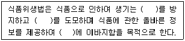

식품산업기사 (2014-08-17 기출문제)
1과목: 식품위생학
1. 채소를 통하여 감염되는 기생충이 아닌 것은?
- 십이지장충
- 선모충
- 요충
- 회충
(정답률: 86%)

2. 세균성 식중독이 경구전염병과 다른 점은?
- 세균성 식중독은 발병 후 면역이 생기나 경구전염병은 생기지 않는다.
- 세균성 식중독은 다량의 균으로 발병되나 경구전염병은 소량의 원인균으로 발병된다.
- 세균성 식중독은 경구전염병에 비하여 잠복기가 길다.
- 세균성 식중독은 2차감염이 잘 일어나는데 비하여 경구전염병은 잘 일어나지 않는다.
(정답률: 62%)
3. 대장균군에 대한 설명으로 옳은 것은?
- 그람음성, 무아포의 간균으로 젖당을 분해하는 호기성, 통성혐기성균이다.
- 그람음성, 간균으로 젖당을 분해하는 호기성, 혐기성균이다.
- 그람음성, 구균으로 적당을 분해하지 않는 호기성, 통성혐기성균이다.
- 그람음성, 무아포의 간균으로 젖당을 분해하지 않는 호기성, 통성혐기성균이다.
(정답률: 77%)
4. 식품위생법의 목적에 대한 설명 중 빈칸을 올바르게 채운 것은?

- 위생상의 위해 - 식품영양의 질적 향상 - 국민 보건의 증진
- 위해 사고 - 식품위생 안전 - 국민보건의 증진
- 위생상의 위해 - 국민보건의 증진 - 식품위생 안전
- 위해 사고 - 식품영양의 질적 향상 - 식품위생 안전
(정답률: 64%)
5. 식품오염에 문제되는 방사능 핵종이 아닌 것은?
- Sr-90
- Cs-137
- I-131
- C-12
(정답률: 87%)
6. 공장폐수에 의한 식품의 오염원인 물질로서 미나마타병과 이타이이타이병을 일으키는 중금속을 각각 순서대로 짝지은 것은?
- 유기수은, 납
- 납, 아연
- 아연, 카드뮴
- 유기수은, 카드뮴
(정답률: 87%)
7. 인수공통전염병에 대한 설명으로 틀린 것은?
- 사람과 동물이 같은 병원체에 의하여 발생하는 질병이다.
- 탄저병, Brucellosis, Salmonellosis 증 등이 속한다.
- 병에 걸린 동물을 식품으로 이용 시 이행될 수 있다.
- 병에 걸린 동물의 유제품에는 이행되지 않는다.
(정답률: 85%)
8. 유독물질의 독성 결정과 관계가 없는 것은?
- 반수 치사량(LD50)
- 1일 섭취 허용량(ADI)
- 최대 무작용량
- 최소 무작용량
(정답률: 61%)
9. 독소와 식품의 연결이 잘못된 것은?
- 무스카린(muscarine) - 버섯
- 솔라닌(solanine) - 감자
- 아미그달린(amygdalin) - 피마자
- 고시폴(gossypol) - 목화씨
(정답률: 86%)
10. 식품의 제조과정에서 액상제품에 거품이 일어 조작에 지장을 줄 때, 이를 억제하기 위해 사용되는 식품첨가물은?
- 초산비닐수지(polyvinyl acetate)
- 헥산(Hexane)
- 유동파라핀(liquid paraffin)
- 규소 수지(silicon resin)
(정답률: 79%)
11. 식품공전에 따른 일반세균수 측정에서 사용되는 배지명은?
- 보통배지
- EMB 한천배지
- 표준한천배지
- 난황첨가 만니톨 식염 한천배지
(정답률: 92%)
12. 살모넬라(Salmonella spp.)를 TSI Slant ager에 접종하여 배양한 결과 하층부가 검은색으로 변한 이유는?
- 유기산 생성
- 인돌 생성
- 젖당 생성
- 유화수소 생성
(정답률: 52%)
13. 식품공전상 통조림 식품의 통조림통에서 용출되어 문제를 일으킬 수 있는 주석의 기준(규격허용량)은 얼마인가? (단, 알루미늄 캔을 제외한 캔제품에 한하며, 산성 통조림은 제외한다.)
- 100mg/kg 이하
- 150mg/kg 이하
- 200mg/kg 이하
- 250mg/kg 이하
(정답률: 63%)
14. 급성독성은 비교적 강하지 않으나 화학적으로 안정하여 잘 분해되지 않는 농약류는?
- parathion
- disulfoton
- DDT
- EPN
(정답률: 77%)
15. 음용수의 수질 기준에서 허용기준수치가 가장 낮은 것은?
- 불소
- 질산성질소
- 크롬
- 수은
(정답률: 81%)
16. 유구조충의 중간숙주는?
- 소
- 돼지
- 다슬기
- 잉어
(정답률: 81%)
17. 어패류 생식이 주된 원인이며 세균성 이질과 비슷한 증상을 나타내는 식중독균은?
- 병원성 대장균
- 보툴리누스균
- 장구균
- 장염비브리오균
(정답률: 88%)
18. HACCP제도에 대한 설명으로 가장 옳은 것은?
- 식품의 기준 및 규격에서 최저기준 이상의 위생적 품질기준 제도
- 식품공장의 위생관리를 위해 위해요소를 중점관리 하는 제도
- 식품의 유통과정 중 문제점 발생시 제품을 자발적으로 회수하여 폐기하는 제도
- 포자를 만드는 세균의 살균을 목표로 한 살균처리 제도
(정답률: 85%)
19. FDA의 1993 Model Food Code에서 정한 잠재적 위해식품의 온도구간(danger zone)은?
- -5 ~ 0℃
- 65 ~ 75℃
- -18 ~ 0℃
- 5 ~ 60℃
(정답률: 70%)
20. 아이스크림에 색소가 균일하게 섞이도록 하기 위해서 사용할 수 있는 용제는?
- 규소수지
- 유동파라핀
- 프로필렌글리콜
- 헥산
(정답률: 47%)
2과목: 식품화학
21. 다음 pectin 물질에 대한 설명 중 틀린 것은?
- pectin 물질은 식물조직의 세포벽이나 세포간질에 주로 존재하는 단순 다당류이다.
- protopectin은 pectin의 전구체로서 과실이 익어감에 따라 가용성의 pectin 등으로 가수분해 된다.
- 과실류나 채소류에서 얻어지는 pectin의 methoxyl기함량이 7%이상의 것을high-methoxyl pectin이라 한다.
- pectin은 alcohol은 녹지 않기 때문에 pectin 추출액에서 pectin을 침전 분리시키는데 alcohol이 흔히 사용되고 있다.
(정답률: 38%)
22. 펙틴(pectin)질 중 분자량이 가장 큰 것은?
- pectinic acid
- protopectin
- pectic acid
- pectin
(정답률: 74%)
23. 비타민 H는 다음 중 어느 것인가?
- Inositol
- Biotin
- Pantothenic acid
- Folic acid
(정답률: 68%)
24. 식품 중의 화분을 회화법에 의해서 측정할 때 계산식이 옳은 것은? (단, S : 건조 전 시료의 무게, W : 회화 후의 회분과 도가니의 무게, WO : 회화 전의 도가니의 무게)
- 회분 % = ((W-S)/WO) × 100
- 회분 % = ((WO-W)/S) × 100
- 회분 % = ((W-WO)/S) × 100
- 회분 % = ((S-WO)/W) × 100
(정답률: 74%)
25. 유지의 자동산화에 대한 다음 설명 중 틀린 것은?
- 유지의 유도기간이 지나면 유지의 산소 흡수속도가 급증한다.
- 식용유지가 자동산화 되면 과산화물가가 높아진다.
- 식용유지의 자동산화 중에는 과산화물의 형성과 분해가 동시에 발생한다.
- 올레산은 리놀레산보다 약 10배 이상 빨리 산화된다.
(정답률: 71%)
26. 밤이나 감을 무쇠칼로 절단하면 흑변 현상이 생기는 주된 이유는?
- 탄닌산이 제2철염과 반응하기 때문에
- 탄닌성분이 공기와 접촉하기 때문에
- 탄닌성분이 구리이온과 반응하기 때문에
- 탄닌성분이 니켈과 반응하기 때문에
(정답률: 65%)
27. 탄성의 변형이 외부의 힘을 가할 때 곧 발생되고 힘을 제거하면 곧바로 변형이 소멸되어 원상으로 완전히 복귀되는 현상은?
- 탄성한계(elastic limit)
- 완전탄성(ideal elasticity)
- 응력(stress)
- 조밀도(consistency)
(정답률: 77%)
28. 다음 중 인체내에서의 무기질의 주된 기능이 아닌 것은?
- 뼈와 치아의 구성성분
- 체내 효소의 작용 촉진
- 생체내에서의 pH 및 삼투압 조절
- 콜레스테롤 조절 작용
(정답률: 50%)
29. 버터의 분산질(상)과 분산매를 순서대로 바르게 연결한 것은?
- 액체 – 액체
- 고체 - 액체
- 액체 – 고체
- 고체 - 고체
(정답률: 70%)
30. 감귤류에 특히 많은 유기산은?
- tartaric acid
- citric acid
- succinic acid
- acetic acid
(정답률: 82%)
31. 선도가 저하된 해산어류의 특유한 비린 냄새의 원인은?
- piperidine
- trimethylamine
- methyl mercaptan
- actin
(정답률: 88%)
32. 빵의 탄력성과 신축성에 관계되는 밀가루의 성분은?
- gluten
- hordein
- myogen
- zein
(정답률: 88%)
33. 거품에 대한 다음 설명 중 틀린 것은?
- 분산매가 액체이고 분산질이 기체인 교질용액의 일종이다.
- 탄산음료는 기포제를 함유하고 있지 않기 때문에 거품이 쉽게 없어진다.
- 식품가공 중 거품을 지우려면 표면장력을 감소시키면 된다.
- 액체와 기체만으로도 안정한 거품이 형성될 수 있다.
(정답률: 58%)
34. 콜로이드 입자가 가라앉지 않고 지속적으로 용액 중에 분산되어 있는 것은 콜로이드 입자의 어떤 성질 때문인가?
- 브라운운동
- 반투성
- 응석
- 염석
(정답률: 82%)
35. 다음 식품 중 전분의 호정화와 관계가 가장 적은 것은?
- 토스트
- 미숫가루
- 라면
- 팽화식품
(정답률: 54%)
36. 일반적으로 효소활성에 크게 영향을 미치지 않는 것은?
- 공기
- 온도
- pH
- 기질의 양
(정답률: 58%)
37. 새우, 게 등을 가열할 때 생기는 적색 물질은?
- astaxanthin
- astacin
- lutein
- cryptoxanthin
(정답률: 66%)
38. 식육 중에 가장 많이 함유되어 있는 무기질은?
- Ca, Cu
- Ca, Mg
- P, S
- Mg, Fe
(정답률: 50%)
39. 육류의 냄새에 관한 설명으로 틀린 것은?
- 신선육 냄새의 주성분은 피페리딘(piperidine)이다.
- 가열육의 냄새는 주로 마이야르 반응(Maillard reaction)에 기인한다.
- 냄새는 동물이 섭취한 사료에 따라 달라질 수 있다.
- 가열할 때, 동물에 따라 특이한 냄새가 나는 것은 구성 지방이 서로 다르기 때문이다.
(정답률: 64%)
40. 가지껍질이 청자색깔을 띠게 하는 주된 색소는?
- lycopene
- lutein
- nasunin
- apigenin
(정답률: 49%)
3과목: 식품가공학
41. 식품이 나타내는 수증기압이 0.98이고 그 온도에서 순수한 물의 수증기압이 1.0일 때 수분활성도(Aw)는?
- 0.98
- 0.96
- 0.94
- 0.92
(정답률: 79%)
42. 채소나 과실을 알칼리 박피 방법으로 가공할 때 알칼리의 어떤 작용으로 껍질이 제거될 수 있는가?
- 껍질 자체를 알칼리가 분해시키기 때문
- 알칼리가 고온에서 전분을 분해시키기 때문
- 껍질 밑층의 pectin질 등을 분해시켜 수용성으로 만들기 때문
- 알칼리가 cellulose를 분해시키기 때문
(정답률: 82%)
43. 어떤 식품의 수소이온농도가 5×10-6일 때 이 식품의 pH는 약 얼마인가? (단, log 5 = 0.699로 계산한다.)
- 5.1
- 5.3
- 5.5
- 5.7
(정답률: 57%)
44. 수산물의 화학적 선도판정의 지표가 되지 않는 것은?
- pH
- 휘발성 염기질소
- 트리메틸아민옥시드(trimethylamin oxide)
- K value
(정답률: 55%)
45. 캔 뚜껑의 expansion ring의 사용목적은?
- 관의 외관을 좋게 하기 위하여
- 진공도를 높여 주기 위하여
- 가열팽창 시 파손을 막기 위하여
- seaming을 쉽게 하기 위하여
(정답률: 59%)
46. 일반적으로 제면용으로 가장 적당하고, 많이 사용되는 밀가루는?
- 강력분
- 준강력분
- 중력분
- 박력분
(정답률: 72%)
47. 통조림 제조 시 주요 4대 공정을 순서대로 올바르게 나열한 것은?
- 탈기 - 살균 - 밀봉 - 냉각
- 탈기 - 밀봉 - 살균 - 냉각
- 살균 - 탈기 - 밀봉 - 냉각
- 살균 - 냉각 - 탈기 - 밀봉
(정답률: 58%)
48. 아스코르빈산에 대한 설명으로 틀린 것은?
- 상용명은 비타민 C이며 화학명은 아스코르브산이다.
- 과일 중의 아스코르빈산은 수확 후의 저장기간, 조리과정에서도 변화가 없다.
- 식품가공에서 갈변이나 산화반응을 억제하는 효과가 있다.
- 산소, 철, 구리 등이 있으면 쉽게 산화되어 데히드로 아스코르브산으로 된다.
(정답률: 77%)
49. 식품가공에 대한 설명 중 틀린 것은?
- 식품가공 과정에서 미생물 발효 방법은 젖산발효, 알코올 발효 등이 있다.
- 식품원료를 가공 적성에 따라 조작을 가하여 새로운 제품을 만드는 것을 식품가공이라 한다.
- 식품가공 과정에서 물리적 방법은 세정, 분쇄, 혼합, 분리 등의 공정이 있다.
- 식품가공 과정에서 화학적 방법으로는 여과, 압착, 건조 등이 있다.
(정답률: 79%)
50. 각 비중계에 대한 설명으로 틀린 것은?
- 디지털 비중계 : 정밀하고 간편하게 비중을 측정할 수 있다.
- 경보오메계 : 비중이 물보다 가벼운 액체에 사용한다.
- 브릭스 비중계 : 비중을 측정한 후 온도 4℃로 보정한다.
- 중보오메계 : 비중이 물보다 무거운 액체에 사용한다.
(정답률: 84%)
51. 사과, 배 등과 같이 호흡급상승(climacteric rise)을 갖는 청과물의 선도유지에 사용되는 활성포장용 품질유지제는?
- 흡습제
- 탈산소제
- 알코올 증기 발생제
- 에틸렌(ethylene) 가스 흡수제
(정답률: 61%)
52. 우유 균질화(homogenization)의 주목적은?
- 지방 함량을 조절하기 위한 것
- 세균수를 감소시키기 위한 것
- 지방이 위로 떠오르지 않게 하기 위한 것
- 여러 영양성분들을 잘 섞이게 하기 위한 것
(정답률: 60%)
53. 연유 제조 시 예비가열 조작을 시행하는 목적이 아닌 것은?
- 단백질 응고의 증대
- 유해 미생물의 파괴
- 효소의 파괴
- 설탕의 용해
(정답률: 45%)
54. 시금치의 건조제품을 만들 때 반드시 거쳐야 할 전처리 과정은?
- 알칼리처리
- 열처리
- 아황산가스처리
- 산처리
(정답률: 62%)
55. 원유에 함유되어 있는 유리지방산(free fatty acids)을 최종제품의 품질을 고려하여 탈산(deacidification)하는 방법이 아닌 것은?
- 알칼리 정제 방법
- 이온교환수지에 의한 방법
- 가성소다와 석회를 이용하는 방법
- 원심분리에 의한 방법
(정답률: 58%)
56. 토마토케첩을 제조하는 기구로 철제를 사용하지 않는 이유는?
- tannin과 반응하기 때문에
- lycopene과 반응하기 때문에
- carotene이 감소하기 때문에
- amino acid가 감소하기 때문에
(정답률: 49%)
57. 유지의 정제 방법 중 화학적인 방법은?
- 정치법
- 여과법
- 탈색법
- 원심분리법
(정답률: 66%)
58. 식물성 유지에 대한 설명으로 옳은 것은?
- 건성유에는 올리브유, 땅콩기름 등이 있다.
- 불건성유에는 들기름, 팜유 등이 있다.
- 반건성유에는 대두유, 참기름, 미강유 등이 있다.
- 불건성유는 요오드값이 150 이상이다.
(정답률: 69%)
59. 마요네즈 제조 시 유화성에 가장 큰 영향을 미치는 것은?
- 식초산
- 식용유
- 소금
- 난황
(정답률: 85%)
60. 유지를 압착법으로 추출하는 경우 열처리의 목적이 아닌 것은?
- 유지의 점도 상승
- 원료의 수분함량 조절
- 유리지방산 생성억제
- 세균, 곰팡이 등 미생물 사멸
(정답률: 41%)
4과목: 식품미생물학
61. 청주용 쌀 코오지 제조에 이용되는 곰팡이는?
- Aspergillus oryzae
- Saccharomyces sake
- Penicillium rogueforti
- Rhizopus japonicus
(정답률: 73%)
62. 술을 제조방법에 따라 분류 시 단행복발효주에 해당되는 것은?
- 맥주
- 포도주
- 위스키
- 고량주
(정답률: 74%)
63. 푸마르산(fumaric acid)제조에 사용되는 미생물은?
- Rhizopus
- Pichia
- Aspergillus
- Brevibacterium
(정답률: 46%)
64. 일반적으로 요구르트 제조 시 대량의 젖산을 생산하며, 정장제로도 이용되는 대표적인 젖산균은 무엇인가?
- Streptococcus faecalis
- Lactococcus lactis
- Lactobacillus bulgaricus
- Lactobacillus plantarum
(정답률: 84%)
65. Naringinase와 hesperidinase를 생산 시 이용되는 대표적인 미생물은?
- Bacillus cereus
- Rhizopus delemar
- Aspergillus niger
- Escherichia coil
(정답률: 45%)
66. 진균류에 대한 설명으로 틀린 것은?
- 고등 미생물로서 곰팡이, 버섯, 효모의 대부분이 여기에 속한다.
- 격벽(septa)의 유무는 곰팡이를 분류하는 중요 지표의 하나이다.
- 진균류의 번식은 주로 균사에 의해 이루어진다.
- 유성포자에 따라 접합균류, 자낭균류, 담자균류 등으로 분류한다.
(정답률: 43%)
67. 파아지(phage) 오염에 의한 피해를 입는 발효공업만으로 짝지어진 것은?
- 식혜, 항생물질 제조
- 청주, 유기산 제조
- 식초, 요구르트 제조
- SCP(single cell protein), 핵산 제조
(정답률: 61%)
68. 누룩 곰팡이에 대한 설명 중 가장 거리가 먼 것은?
- 단모균은 단백질 분해력이 강하다.
- 장모균은 당화력이 강하다.
- 분생포자를 형성하지 않으면 끝이 빗자로 모양이다.
- 최적생육온도는 20 ~ 37℃이다.
(정답률: 71%)
69. 다음 중 무성포자에 속하지 않는 것은?
- 후막포자
- 포자낭포자
- 분생포자
- 접합포자
(정답률: 55%)
70. 다음 중 진핵세포가 아닌 것은?
- 동식물 세포
- 원생생물 세포
- 남조류 세포
- 담자균 세포
(정답률: 51%)
71. 포도주 발효에 관여하는 가장 대표적인 효모는?
- Saccharomyces cereviseae
- Saccharomyces carlsbergensis
- Saccharomyces formosensis
- Saccharomyces ellipsoideus
(정답률: 64%)
72. 내삼투압성이 높아 잼과 같은 당농도가 높은 곳에서 번식하여 이를 변패시키는 미생물은?
- Candida utilis
- Bacillus subtilis
- Acetobacter aceti
- Saccharomyces rouxii
(정답률: 48%)
73. 맥주 제조용 맥아를 만드는 공정이 바르게 된 것은?
- 보리의 정선 → 침맥 → 발아 → 배조
- 보리의 정선 → 발아 → 침맥 → 배조
- 침맥 → 발아 → 배조 → 보리의 정선
- 침맥 → 발아 → 보리의 정선 → 배조
(정답률: 43%)
74. 초산균은 배지 중 어떤 성분을 산화하여 초산을 생성하는가?
- 포도당
- 젖당
- 에탄올
- 부탄올
(정답률: 47%)
75. 달걀 전체가 회갈색으로 되고 특히 난황이 검게 되는 흑색 부패(black rots)의 원인균은?
- Torulopsis 속
- Serratia 속
- Proteus 속
- Achromobacter 속
(정답률: 62%)
76. 세균의 생육에 있어 균체의 세대기간이 가장 짧고 일정하며 세포의 생리활성이 가장 강한 시기는?
- 대수기
- 잠복기
- 감수기
- 정상기
(정답률: 77%)
77. 다음 중 젖산 발효식품이 아닌 것은?
- 김치
- 치즈
- 요구르트
- 식초
(정답률: 81%)
78. 세균세포의 구조에서 DNA의 이동 통로 기능을 행하는 곳은?
- 편모(flagella)
- 세포막(memnrane)
- 선모(pili)
- 메소솜(mesosome)
(정답률: 44%)
79. 포도당 100g을 정상형(homofermentative) 젖산균을 사용하여 젖산발효시킬 때 얻어지는 젖산의 이론치는?
- 80g
- 86g
- 92g
- 100g
(정답률: 57%)
80. 부패한 통조림에서 미생물을 분리하여 시험한 결과, 그람양성의 포자를 생성하는 균이었다. 추정이 가능한 미생물은?
- Bacillus subtilis
- Clostridium sporogenes
- Saccharomyces cerevisiae
- Lactobacillus bulgaricus
(정답률: 73%)
5과목: 식품제조공정
81. 다음 여과 방법 중 가장 에너지 소비가 적은 것은?
- 막분리 여과
- 압축 여과
- 진공 여과
- 중력 여과
(정답률: 44%)
82. 내부에 스크루 컨베이어를 설치하여 회전시켜 경사면을 자전하면서 혼합 효율을 높인 원추형 모양의 혼합기는?
- 리본형 혼합기
- 유동형 혼합기
- 나우타형 혼합기
- 텀블러 혼합기
(정답률: 58%)
83. 단팥죽을 제조하기 위해 팥을 구입했는데 완두콩과 대두가 섞여 있는 경우가 발생하였다. 팥의 순도를 올리기 위해 어느 선별기를 선택하는 것이 좋은가?
- 풍력선별기
- 색채선별기
- 비중선별기
- 중력선별기
(정답률: 84%)
84. 충격력을 이용하여 원료를 분쇄하는 해머밀(hammermil)은 어느 종류의 분쇄기에 속하는가?
- 조 분쇄기
- 중간 분쇄기
- 미 분쇄기
- 초미 분쇄기
(정답률: 51%)
85. 실린더형 추출기로 부채꼴 칸막이로 나누어진 수많은 구역으로 구성되어 있으며, 각 구역은 수직축을 따라 회전하며 다공성 바닥으로 구성되어 있음을 특징으로 하는 연속식 추출기는?
- Bollman 추출기
- Hildebrandt 추출기
- Rotocel 추출기
- Miscella 추출기
(정답률: 43%)
86. 식품의 건조방법과 그에 적합한 식품으로 잘못 연결된 것은?
- 분무건조 - 우유
- 동결건조 - 설탕
- 드럼건조 - 이유식류
- 마이크로파 건조 - 칩(chip)
(정답률: 69%)
87. 농도 5%(wt)의 식염수 1톤을 50%(wt)로 농축시키려면 몇 kg의 수분증발이 필요한가?
- 120
- 250
- 630
- 900
(정답률: 51%)
88. 막 분리 여과법 중의 하나로 압력 차이에 의해 막 필터의 구멍으로 입자의 크기에 따라 미립자나 미생물을 분리 시키는 방법으로 음료수의 세균 여과, 맥주, 포도주 등의 청징 효과 등에 쓰이는 여과법은?
- 원심여과법(centrifugal filtration)
- 역삼투법(reverse osmosis)
- 투석법(dialysis)
- 정밀여과법(microfiltration)
(정답률: 68%)
89. 참치 통조림 가공공장에서 자숙에 앞서 원료 참치를 선별하고자 할 때 가장 많이 사용하는 선별 방법은 무엇인가?
- 무게 선별
- 모양 선별
- 광학 선별
- 정전적 선별
(정답률: 61%)
90. 포자를 형성하는 Bacillus속의 내열성균을 완전히 살균하기 위하여 100℃에서 일정시간 간격으로 반복하여 멸균하는 살균법은?
- 초고온 살균법(UHT)
- 고온순간살균법(HTST)
- 간헐살균법
- 전자파 살균법
(정답률: 76%)
91. 과립을 제조하는데 사용하는 장치인 피츠밀(Fitz mill)의 원리에 대한 설명으로 가장 적합한 것은 무엇인가?
- 분말 원료와 액체를 혼합시켜 과립을 만든다.
- 단단한 원료를 일정한 크기나 모양으로 파쇄시켜 과립을 만든다.
- 혼합이나 반죽된 원료를 스크루를 통해 압출시켜 과립을 만든다.
- 분말 원료를 고속 회전시켜 콜로이드 입자로 분산시켜 과립을 만든다.
(정답률: 75%)
92. 과즙, 젤라틴과 같이 열에 예민한 물질을 증발 농축하려면 어떤 증발관을 이용해야 하는가?
- 수직관식 증발관
- 강제순환식 증발관
- 수평관식 증발관
- 진공 증발관
(정답률: 73%)
93. 수분함량 12%인 옥수수가루를 사용하여 압출성형 스낵을 제조하고자 한다. 옥수수가루를 압출성형기에 투입하기 전에 수분함량을 18%로 맞추어야 한다면 옥수수가루 10kg 당 가해야 하는 물의 양은 얼마인가?
- 0.37kg
- 0.73kg
- 1.11kg
- 1.48kg
(정답률: 57%)
94. 냉동건조(freeze drying)방법으로 제조된 식품의 특징으로 틀린 것은?
- 제품의 밀도가 증가한다.
- 향미 성분이 보존된다.
- 승화와 탈습의 과정을 거쳐 제조된다.
- 제품의 물리적 변형이 적다.
(정답률: 59%)
95. 20kg의 물을 수분함량 10%인 쌀가루 100kg에 첨가하면 이 혼합물의 수분함량은 얼마인가?
- 25%
- 30%
- 21%
- 22.5%
(정답률: 51%)
96. 채소의 가공 시 블랜칭(blanching)처리를 통하여 가공적성 및 저장안정성을 증진시키는데, 이 때 블랜칭 열처리의 적합성 지표로 사용되는 효소는?
- amylase
- protease
- lipase
- catalase
(정답률: 49%)
97. 다음 중 살균온도 121℃에서의 습열살균이 필요한 식품의 pH는?
- pH 2
- pH 3
- pH 4
- pH 5
(정답률: 56%)
98. 초임계유체추출방법이 효과적으로 쓰이는 식품군이 아닌 것은?
- 커피
- 유지
- 스낵
- 향신료
(정답률: 70%)
99. 방사선 조사 살균의 유용성에 해당되지 않는 것은?
- 포장식품의 살균에 유용하다.
- 냉동상태의 식품살균이 가능하다.
- 단백질 식품의 겔화를 유도할 수 있다.
- 연속식 살균이 가능하다.
(정답률: 70%)
100. 기송건조기의 특징으로 바르지 않은 것은?
- 가루나 입자상태의 원료에 적합하다.
- 건조표면이 작아 건조속도가 늦다.
- 균일한 건조제품을 얻을 수 있다.
- 건조와 동시에 수송하는 역할도 한다.
(정답률: 64%)